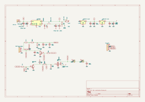
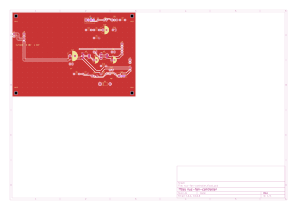
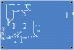

Open the drawings
Schematic
Drawn with wires, not net labels. Every signal net carries a name tag, so the print, the netlist and the board agree on the names. J2 pin 4 carries a no‑connect flag: that is the NUC header's own fan‑supply wire, which this board never touches.

Board, 124 × 85 mm, two layers
GND poured on both layers with 322 stitching vias. Power nets 1.5 mm, signals 0.2 mm. Flow left to right: the 19 V entry (J1) and the module header (J6), then the 12 V rail to the LDOs and the Pro Mini header; the NUC interface along the top; the fan drive and the three fan connectors down the right edge. The silkscreen between Q1 and Q2 reads Q1 Q2 1=E 2=B 3=C.


Bill of materials — 33 fitted parts, all from the cabinet
| Refs | Value | Footprint |
|---|---|---|
| C3 | 470uF 25V | Capacitor_THT:CP_Radial_D10.0mm_P5.00mm |
| C4 | 100n | Capacitor_THT:C_Disc_D3.8mm_W2.6mm_P2.50mm |
| C5 | 10uF | Capacitor_THT:CP_Radial_D6.3mm_P2.50mm |
| C6 | 100n | Capacitor_THT:C_Disc_D3.8mm_W2.6mm_P2.50mm |
| C7 | 10uF | Capacitor_THT:CP_Radial_D6.3mm_P2.50mm |
| C8 | 100n | Capacitor_THT:C_Disc_D3.8mm_W2.6mm_P2.50mm |
| C9 | 100p | Capacitor_THT:C_Disc_D3.0mm_W2.0mm_P2.50mm |
| C10 | 1uF | Capacitor_THT:CP_Radial_D8.0mm_P3.50mm |
| C11 | 100n | Capacitor_THT:C_Disc_D3.8mm_W2.6mm_P2.50mm |
| C12 | 100n | Capacitor_THT:C_Disc_D3.8mm_W2.6mm_P2.50mm |
| D2 | 1N5819 | Diode_THT:D_DO-41_SOD81_P10.16mm_Horizontal |
| J1 | 19V IN | Connector_PinHeader_2.54mm:PinHeader_1x02_P2.54mm_Vertical |
| J2 | NUC fan header | Connector:FanPinHeader_1x04_P2.54mm_Vertical |
| J3 | FAN 2 | Connector_PinHeader_2.54mm:PinHeader_1x02_P2.54mm_Vertical |
| J4 | FAN 3 | Connector_PinHeader_2.54mm:PinHeader_1x02_P2.54mm_Vertical |
| J5 | Pro Mini | Connector_PinHeader_2.54mm:PinHeader_1x05_P2.54mm_Vertical |
| J6 | BUCK MODULE — 1, 2 GND · 3 19V · 4 12V | Connector_PinHeader_2.54mm:PinHeader_1x04_P2.54mm_Vertical |
| J7 | FAN 1 | Connector_PinHeader_2.54mm:PinHeader_1x02_P2.54mm_Vertical |
| Q1 | BC547B — 1 emitter, 2 base, 3 collector | Package_TO_SOT_THT:TO-92_Inline_Wide |
| Q2 | BC547B — 1 emitter, 2 base, 3 collector | Package_TO_SOT_THT:TO-92_Inline_Wide |
| Q3 | IRFZ44N | Package_TO_SOT_THT:TO-220-3_Vertical |
| R2 | 1k | Resistor_THT:R_Axial_DIN0204_L3.6mm_D1.6mm_P5.08mm_Horizontal |
| R3 | 4.7k | Resistor_THT:R_Axial_DIN0204_L3.6mm_D1.6mm_P5.08mm_Horizontal |
| R4 | 2.2k | Resistor_THT:R_Axial_DIN0204_L3.6mm_D1.6mm_P5.08mm_Horizontal |
| R5 | 10k | Resistor_THT:R_Axial_DIN0204_L3.6mm_D1.6mm_P5.08mm_Horizontal |
| R6 | 1k | Resistor_THT:R_Axial_DIN0204_L3.6mm_D1.6mm_P5.08mm_Horizontal |
| R7 | 10k | Resistor_THT:R_Axial_DIN0204_L3.6mm_D1.6mm_P5.08mm_Horizontal |
| R8 | 1k | Resistor_THT:R_Axial_DIN0204_L3.6mm_D1.6mm_P5.08mm_Horizontal |
| R9 | 120R | Resistor_THT:R_Axial_DIN0204_L3.6mm_D1.6mm_P5.08mm_Horizontal |
| R10 | 10k | Resistor_THT:R_Axial_DIN0204_L3.6mm_D1.6mm_P5.08mm_Horizontal |
| TP1 | TACH | TestPoint:TestPoint_Pad_D1.5mm |
| U2 | AMS1117-5.0 | Package_TO_SOT_SMD:SOT-223-3_TabPin2 |
| U3 | AMS1117-3.3 | Package_TO_SOT_SMD:SOT-223-3_TabPin2 |
Plus four MountingHole:MountingHole_3.2mm_M3 holes, which are board‑only and therefore correctly absent from the table above. And the converter itself: an XL4016E1 step‑down module (cabinet L1 A10 — 5–40 V in, 1.2–36 V out, 8 A, ~180 kHz, 61 × 41 × 27 mm with its two heatsinks), bolted to the enclosure wall and joined to J6 by four wires. It is a purchased part, so it is not in the table either.
Build order, in short
- Identify the four NUC fan‑header wires with a meter. Mark them before cutting anything.
- Fit J1, J6, C3 and C4. Set the module to 12.0 V with a meter before it is wired in, and confirm its current limit is released by watching the rail through a fan starting.
- Fit U2/U3, confirm 5 V and 3.3 V. Then meter Q1 and Q2 against the pinning note above and fit Q1/Q2/Q3.
- Find the fan's stall duty and measure its RPM at two duties. Those four numbers are the calibration constants at the top of the sketch.
- Read TP1 with a frequency counter: it must equal rpm / 30 Hz exactly — it is a hardware timer.
- Connect the tach side to the NUC alone (J2.1 + J2.2) and read the RPM in BIOS.
- Add the PWM wire (J2.3) and watch the serial line while the machine is loaded.
- Only then connect the fans to J7/J3/J4 and splice the stock fan cable.